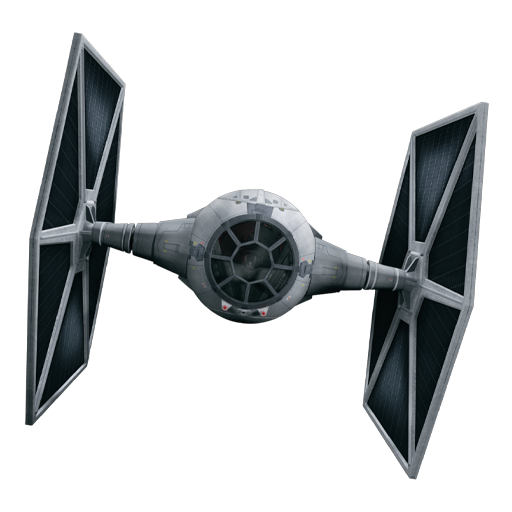
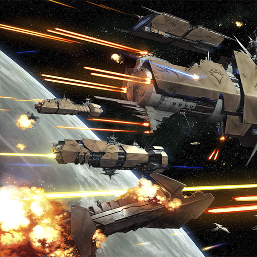
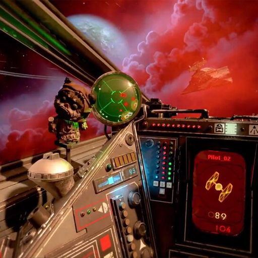
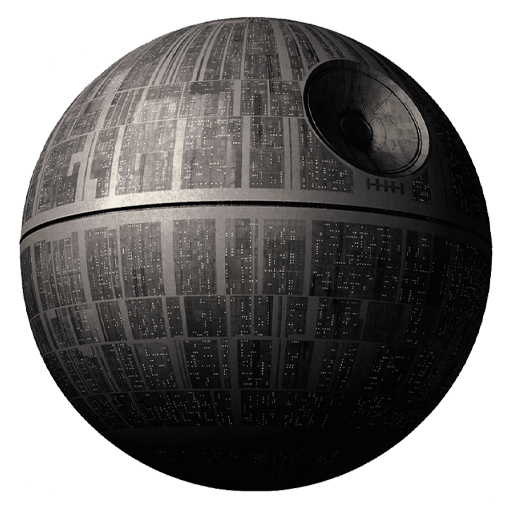

O ataque direto de um Tie Fighter é certeiro! Sabendo disso, você deve desviar todos os ataques de Tie Fighters.
Um canhão de plasma atacando é devastador! Sabendo disso, você deve atirar antes que o plasma destrua sua X-Wing.
Quando uma boa oportunidade aparecer você deve agarrá-la! Sabendo disso, você deve acelerar sempre que encontrar um corredor livre.
Encontrar um ponto fraco é a única maneira de derrotar a Estrela da Morte. Atire no ponto fraco e conquiste a glória da vitória!
